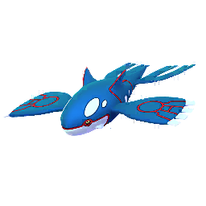
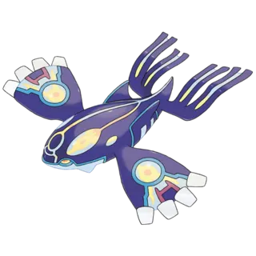
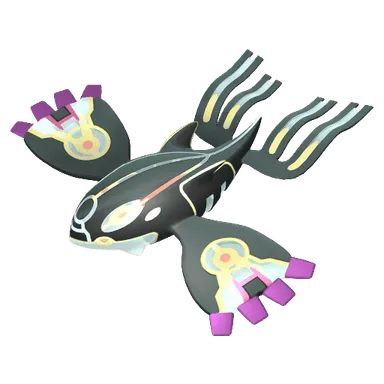

📖 Introduction
Primal Kyogre is the Legendary form of Kyogre, known for its immense Water-type power. It can unleash devastating moves like Hydro Pump and Blizzard, making it a dangerous opponent in raids.
Primal Kyogre is considered one of the most challenging Primal Raids in Pokémon GO due to its high HP pool and powerful Water-type attacks.
Despite its power, Primal Kyogre has clear weaknesses: Electric-type moves deal massive damage, and Grass-types also have an advantage.
This guide will help trainers identify the best counters, understand Primal Kyogre’s moves and weather boosts, and prepare a raid team to defeat this Legendary Water-type Pokémon effectively.
This guide is regularly updated based on in-game testing and current raid rotations.
⚔️ Raid Difficulty
Primal Kyogre is significantly stronger than standard legendary raids. Proper coordination is important for success.
- 4–5 Trainers: Possible with optimized Electric teams
- 6–8 Trainers: Comfortable clear
- 8+ Trainers: Very safe and fast win
🧠 Kyogre Raid Strategy
Kyogre is a powerful pure Water-type Legendary Pokémon with high bulk and strong charged moves like Hydro Pump and Blizzard. Its massive HP pool makes it a longer fight compared to many raid bosses.
The key to defeating Kyogre is using high-DPS Electric and Grass counters while managing survivability.
- ⚡ Electric types deal consistent high damage
- 🌿 Grass types are extremely strong but risky
- ⚠️ Avoid Grass teams if Kyogre has Blizzard
- 👥 Coordinate Mega boosts for faster clears
⚡Quick picks
- Best Mega Team: Sceptile, Manectric, Venusaur
- Best Shadow Team: Raikou, Magnezone, Venusaur
- Best Regular Team: Zarude, Kartana, Zekrom
❌ Common Raid Mistakes
- Not bringing a Mega Pokémon for team boosts
- Using weather-boosted Pokémon of the wrong type
- Relobbying too late and losing damage time
- Ignoring dodging during hard-hitting moves
📌 Is Primal Kyogre Worth Raiding?
Yes, because:
- Strong Water-type attacker
- Shiny available
- Useful for PvE battles
- Legendary collector value
Only skip if your goal is soloing raids, as Kyogre is difficult alone.
⚠️ Primal Kyogre Weaknesses
Kyogre is weak to the following types:
Notes: Electric-type counters like Raikou or Zapdos deal massive damage. Grass-types are effective but slower.
| Category | Details |
|---|---|
| ❌ Weak To: |
 Electric • Electric •
 Grass Grass
|
| ✅ Resistant To: |
 Steel • Steel •
 Fire • Fire •
 Water • Water •
 Ice Ice
|
Notes: Electric and Grass-type Pokémon are the only super-effective counters, so building a focused team around those types is crucial.
Tip: Focus primarily on Electric-types for safer raids. Grass-types offer higher damage but are risky against Blizzard.
🗡️ Best Counters for Primal Kyogre
The best way to defeat Primal Kyogre is to use Electric or Grass-type Pokémon.
🌿 Grass-Type Counters (Strong Alternative)
Grass-type Pokémon are also super effective and perform very well. However, they must be used carefully if Primal Kyogre has Ice-type coverage moves, which can heavily damage Grass attackers.
- Use fast moves like Vine Whip or Razor Leaf
- Charged moves such as Frenzy Plant maximize output
- Weather boost under Sunny conditions increases Grass damage
- Tangrowth: (Vine Whip / Power Whip)
- Tapu Bulu: (Bullet Seed / Grass Knot)
Extremely high attack stat.
Best Grass attacker.
⚡ Electric-Type Counters
Electric-type attackers are typically the strongest option against Primal Kyogre. They deal consistent super-effective damage while resisting some Water-type attacks. Fast moves like Thunder Shock or Spark combined with charged moves like Wild Charge or Thunderbolt provide maximum DPS.
- Use high-level Electric attackers
- Pair fast-charging moves with high-damage charged attacks
- Mega Electric Pokémon boost team-wide Electric damage
- Magnezone: (Volt Switch / Wild Charge)
- Mewtwo: (Thunderbolt)
One of the highest Electric DPS Pokémon in Pokémon GO.
Legendary Electric attacker with huge attack stats.
🔥 Why These Counters Are Effective
Kyogre’s Water typing makes it weak to only two types — but both are extremely powerful:
- ⚡ Electric attacks deal consistent super-effective damage
- 🌿 Grass attacks deal the highest DPS
- ⚠️ Grass Pokémon are vulnerable to Blizzard (one-shot risk)
Electric Pokémon are generally safer, while Grass Pokémon provide maximum damage output when conditions are favorable.
🌦️ Weather Boost
Primal Kyogre gets a weather boost in:
☀️ Sunny Weather
- Boosts Grass-types attackers
🌧️ Rainy Weather
- Boosts Water type Pokemon and Electric-types moves
📊 Primal Kyogre Stats
| Type | Water |
| Max CP (Kyogre) | 3835 |
| Weather Boost | Rainy |
| Shiny | Yes |
| Base Attack | 270 |
| Base Defence | 228 |
| Base Stamina | 205 |
Kyogre’s high attack makes it one of the deadliest Water-type raid bosses, but it is slightly less bulky than other Legendary Pokémon like Giratina.
🏆 Best Regular Counters
Regular pokemon that amplify the right types give you a powerful edge. Below are top Regular counters with short notes on why they excel.
| Pokémon | 🗡️ Fast Moves | 💥 Charged Moves | 🔄 Elite Moves | 🏆 Best Moves | 🧪 Why This Counter Works |
|---|---|---|---|---|---|
| Zarude | Vine Whip / Bite | Power Whip / Energy Ball / Dark Pulse | None | Vine Whip / Bite and Power Whip / Energy Ball | Grass typing and Vine Whip + Power Whip deal consistent super-effective damage against Primal Kyogre while resisting Water-type attacks. |
| Zekrom | Charge Beam / Dragon Breath | Flash Cannon / Wild Charge / Outrage / Crunch | Fusion Bolt | Charge Beam and Fusion Bolt | Electric typing with Charge Beam and Fusion Bolt delivers extremely high super-effective DPS against Primal Kyogre. |
| Kartana | Air Slash / Fury Cutter / Razor Leaf | Sacred Sword / Aerial Ace / X-Scissor / Leaf Blade / Night Slash | None | Razor Leaf and Leaf Blade | Razor Leaf and Leaf Blade provide some of the highest Grass-type DPS in the game, exploiting Primal Kyogre’s weakness. |
| Black Kyurem | Shadow Claw / Dragon Tail | Stone Edge / Blizzard / Iron Head / Outrage / Fusion Bolt / Freeze Shock | None | Dragon Tail and Freeze Shock | Fusion Bolt provides strong Electric-type coverage, allowing it to hit Primal Kyogre super effectively. |
| Eternatus | Poison Jab / Dragon Tail | Flamethrower / Dragon Pulse / Sludge Bomb | Dynamax Cannon | Dragon Tail and Dynamax Cannon | High base stats allow solid neutral damage, but it does not exploit Primal Kyogre’s weakness directly. |
| Xurkitree | Thunder Shock / Spark | Power Whip / Discharge / Thunder / Dazzling Gleam | None | Thunder Shock / Spark and Thunder / Dazzling Gleam | One of the highest Electric-type attackers, dealing massive super-effective damage with Thunder Shock and Thunder. |
| Raikou | Thunder Shock / Volt Switch | Aura Sphere / Shadow Ball / Thunder / Thunderbolt / Wild Charge | None | Volt Switch and Aura Sphere / Shadow Ball / Thunder | Strong Electric-type DPS with Thunder Shock and Wild Charge makes it one of the safest and most reliable counters. |
| Rillaboom | Scratch / Razor Leaf | Earth Power / Grass Knot / Energy Ball | None | Razor Leaf and Earth Power | Grass-type moves hit Primal Kyogre super effectively while benefiting from Sunny weather boosts. |
| Sky Shaymin | Hidden Power / Magical Leaf / Zen Headbutt | Energy Ball / Grass Knot / Solar Beam / Seed Flare | None | Magical Leaf and Solar Beam | High Grass-type damage output with Magical Leaf and Seed Flare exploits Primal Kyogre’s weakness efficiently. |
| Chesnaught | Low Kick / Smack Down / Vine Whip | Superpower / Gyro Ball / Energy Ball / Solar Beam / Thunder Punch | Frenzy Plant | Smack Down and Solar Beam | Vine Whip and Solar Beam allow it to deal strong super-effective Grass damage, though it must avoid Blizzard. |
| Dawn Wings Necrozma | Shadow Claw / Metal Claw / Psycho Cut | Dark Pulse / Iron Head / Future Sight / Outrage / Moongeist Beam | None | Shadow Claw / Metal Claw and Moongeist Beam | Deals strong neutral damage, but does not benefit from Electric or Grass typing against Primal Kyogre. |
| Tangrowth | Infestation / Vine Whip | Sludge Bomb / Ancient Power / Rock Slide / Solar Beam / Power Whip | None | Infestation and Solar Beam | Bulky Grass-type attacker that resists Water and deals steady super-effective damage. |
| Magnezone | Metal Sound / Spark / Charge Beam / Volt Switch | Flash Cannon / Mirror Shot / Zap Cannon / Wild Charge | None | Volt Switch and Zap Cannon | Electric typing resists Water moves and delivers consistent super-effective damage with Wild Charge or Zap Cannon. |
| Keldeo(Original) | Low Kick / Poison Jab | Close Combat / Sacred Sword / X-Scissor / Aqua Jet / Hydro Pump | None | Poison Jab and Hydro Pump | Does not exploit Primal Kyogre’s weaknesses and performs mostly neutral damage. |
| Tapu Bulu | Rock Smash / Bullet Seed | Megahorn / Grass Knot / Solar Beam / Dazzling Gleam | Nature's Madness | Rock Smash and Solar Beam | Strong Grass-type attacker that resists Water-type damage and hits Primal Kyogre super effectively. |
👤 Best Shadow Counters
Shadow pokemon that amplify the right types give you a powerful edge. Below are top Shadow counters with short notes on why they excel.
| Pokémon | 🗡️ Fast Moves | 💥 Charged Moves | 🔄 Elite Moves | 🏆 Best Moves | 🧪 Why This Counter Works |
|---|---|---|---|---|---|
| Shadow Mewtwo | Psycho Cut / Confusion | Focus Blast / Flamethrower / Thunderbolt / Psychic / Ice Beam | Hyper Beam / Shadow Ball / Psystrike | Confusion and Hyper Beam | Shadow boost increases Thunderbolt’s damage, allowing strong super-effective Electric coverage. |
| Shadow Electivire | Low Kick / Thunder Shock | Thunder Punch / Thunder / Ice Punch / Wild Charge | Flamethrower | Low Kick and Thunder | Shadow bonus boosts Wild Charge damage, making it one of the highest Electric DPS options. |
| Shadow Venusaur | Razor Leaf / Vine Whip | Sludge / Sludge Bomb / Petal Blizzard / Solar Beam | Frenzy Plant | Razor Leaf and Solar Beam | Shadow Frenzy Plant delivers extremely strong Grass-type burst damage against Primal Kyogre. |
| Shadow Magnezone | Metal Sound / Spark / Charge Beam / Volt Switch | Flash Cannon / Mirror Shot / Zap Cannon / Wild Charge | None | Volt Switch and Zap Cannon | Shadow boost amplifies Electric damage while Steel typing resists some attacks. |
| Shadow Tangrowth | Infestation / Vine Whip | Sludge Bomb / Ancient Power / Rock Slide / Solar Beam / Power Whip | None | Infestation and Solar Beam | Shadow bonus increases Grass-type DPS while maintaining solid bulk. |
| Shadow Chesnaught | Low Kick / Smack Down / Vine Whip | Superpower / Gyro Ball / Energy Ball / Solar Beam / Thunder Punch | Frenzy Plant | Smack Down and Solar Beam | Shadow-boosted Grass moves deal heavy super-effective damage, but watch for Blizzard. |
| Shadow Raikou | Thunder Shock / Volt Switch | Aura Sphere / Shadow Ball / Thunder / Thunderbolt / Wild Charge | None | Volt Switch and Aura Sphere / Shadow Ball / Thunder | Shadow Wild Charge provides extremely high Electric DPS, making it one of the best overall counters. |
⚡ Best Mega Counters
Mega pokemon that amplify the right types give you a powerful edge. Below are top Mega counters with short notes on why they excel.
| Pokémon | 🗡️ Fast Moves | 💥 Charged Moves | 🔄 Elite Moves | 🏆 Best Moves | 🧪 Why This Counter Works |
|---|---|---|---|---|---|
| Mega Venusaur | Razor Leaf / Vine Whip | Sludge / Sludge Bomb / Petal Blizzard / Solar Beam | Frenzy Plant | Razor Leaf and Solar Beam | Mega boost strengthens all Grass-type teammates while dealing strong super-effective damage itself. |
| Mega Sceptile | Fury Cutter / Bullet Seed | Aerial Ace / Earthquake / Leaf Blade / Dragon Claw / Breaking Swipe | Frenzy Plant | Bullet Seed and Earthquake | Extremely high Grass-type DPS with team-wide Grass boost makes it a top Mega choice. |
| Mega Rayquaza | Air Slash / Dragon Tail | Aerial Ace / Dragon Ascent / Ancient Power / Outrage | Hurricane / Breaking Swipe | Dragon Tail and Dragon Ascent | Deals strong neutral Dragon-type damage and boosts Dragon teammates, though it does not hit super effectively. |
| Mega Manectric | Charge Beam / Thunder Fang / Snarl | Flame Burst / Overheat / Thunder / Wild Charge / Psychic Fangs | None | Snarl and Overheat | Mega boost enhances Electric-type teammates while delivering powerful super-effective damage. |
| Mega Ampharos | Charge Beam / Volt Switch | Focus Blast / Power Gem / Trailblaze / Zap Cannon / Thunder / Thunder Punch / Brutal Swing | Dragon Pulse | Volt Switch and Focus Blast / Zap Cannon | Electric typing provides consistent super-effective damage while boosting team Electric attacks. |
| Mega Gallade | Low Kick / Confusion / Psycho Cut / Charm | Close Combat / Leaf Blade / Psychic | Synchronoise | Charm and Close Combat | Primarily deals neutral damage and does not directly exploit Primal Kyogre’s weakness. |
| Mega Latios | Zen Headbutt / Dragon Breath | Aura Sphere / Solar Beam / Psychic / Dragon Claw | Luster Purge | Zen Headbutt and Solar Beam | Solar Beam allows Grass-type coverage while providing strong overall stats. |
| Mega Lucario | Counter / Bullet Punch | Close Combat / Power-Up Punch / Aura Sphere / Shadow Ball / Flash Cannon / Meteor Mash / Blaze Kick / Thunder Punch | Force Palm | Counter and Close Combat | Primarily deals neutral damage and does not directly counter Primal Kyogre’s weaknesses. |
🌀 Primal Kyogre Moveset
🗡️ Fast Moves
- Waterfall
💥 Charged Moves
- Thunder
- Blizzard
- Hydro Pump
- Avalanche
- Surf
🔄 Elite Moves
- Origin Pulse
Moves to Dodge
- Hydro Pump – extremely high damage, can KO unprepared counters.
- Waterfall – fast-charging Water move, do not let your attackers take too many hits.
🎯 Catch CP & 100% IV
After defeating Kyogre, trainers can catch the normal or shiny Kyogre.
The CP range after the raid is:
- No Weather Boost: 3,261-3,372 CP
- Weather Boost: 4,077-4,215 CP
100% IV CP values:
- 3372 (Normal)
- 4215 (Weather Boosted)
❓ FAQ
Can Primal Kyogre be shiny in Pokémon GO?
Shiny Primal Kyogre is now available in raids! The shiny version has a dark black prism body with glowing accents
What is Primal Kyogre’s exclusive move?
Primal Kyogre can use the special move Origin Pulse, a powerful Water-type attack that deals massive damage to all opponents in its path during Raid Battles.
How many trainers are required to defeat Primal Kyogre?
Depending on your counters, 2–4 trainers with strong Electric or Grass-type Pokémon can defeat it efficiently.
Is Primal Kyogre difficult to defeat?
Primal Kyogre has extremely high attack power but relatively lower bulk, so proper type advantage makes this raid manageable.
What makes Primal Kyogre strong?
Its high attack stat, strong Water-type damage, and access to Origin Pulse make it a top-tier raid and PvP option.
What makes Primal Kyogre unique?
Its massive size, ocean-controlling abilities, and devastating Origin Pulse attack make Primal Kyogre visually stunning and strategically powerful in Raid Battles.
🎯 Catching Tips for Kyogre
- 🟡 Use Golden Razz Berry
- 🎯 Aim for Excellent Curveball Throws
- 🌀 Always throw curveballs
- ⏱️ Throw after attack animation
Kyogre is large but moves slowly, making Excellent throws easier with proper timing.
✨ Shiny Primal Kyogre
Yes, trainers have a chance to encounter a Shiny Kyogre after defeating Primal Kyogre in a raid. The shiny version features a darker blue hue compared to the regular Kyogre, making it visually distinct and highly collectible.
While Primal Kyogre itself cannot be caught directly, the post-raid encounter with regular Kyogre provides the opportunity for shiny hunting. The chance of obtaining a shiny is higher than in wild encounters, especially during Legendary or Primal Raids.
🧬 Best Mega Evolutions
Recommended Megas to use against Primal Kyogre:
- Venusaur, Gallade, Latios, Sceptile – 🌿 Grass boost
- Sceptile – 🐛 Bug boost
- Rayquaza, Latios – 🐉 Dragon boost
- Gallade - 🔮 Psychic boost
- Lucario - 🥊 Fighting boost
- Rayquaza – 🕊️ Flying boost
- Manectric, Ampharos - ⚡Electric boost
🎁 Raid Rewards
Defeating Primal Kyogre in a Primal Raid in Pokémon GO grants trainers several valuable rewards. These include useful battle items, experience points, and a chance to catch Kyogre after the raid battle ends.
| Reward | Typical Amount |
|---|---|
| Golden Razz Berry | 3 – 12 |
| Rare Candy | 3 – 9 |
| Revive | 6 – 15 |
| Hyper Potion | 6 – 15 |
| Fast TM | 0 – 2 |
| Charged TM | 0 – 2 |
| Stardust | 1000 |
Primal Energy Rewards
Unlike standard Legendary raids, defeating Primal Kyogre also rewards Primal Energy, which is required to perform Primal Reversion.
| Performance | Primal Energy Reward |
|---|---|
| Very Fast Completion | 80 – 100 Energy |
| Average Completion | 60 – 80 Energy |
| Slow Completion | 40 – 60 Energy |
Premier Balls
After defeating Primal Kyogre, trainers receive Premier Balls to catch Kyogre. The number of balls depends on several factors:
- Damage dealt during the raid
- Gym control bonus
- Friendship bonus
- Team contribution
Most players receive between 8 and 16 Premier Balls.
Extra Rewards
- 10,000 XP for completing a Legendary or Primal raid
- Friendship bonus XP when raiding with friends
- Chance to encounter a Shiny Kyogre
⚖️ Shadow & Mega Comparison
🖼️ Regular vs Shiny Primal Kyogre Forms
The shiny version features a darker blue hue compared to the regular Kyogre, making it visually distinct and highly collectible.

Kyogre
Images are used for informational and educational purposes only. All rights belong to their respective owners.
Shiny Kyogre
Images are used for informational and educational purposes only. All rights belong to their respective owners.

Primal Kyogre
Images are used for informational and educational purposes only. All rights belong to their respective owners.

Shiny Primal Kyogre
Images are used for informational and educational purposes only. All rights belong to their respective owners.
🏁 Conclusion
Primal Kyogre is a high-difficulty raid boss that demands proper preparation. Build a strong Electric-focused team, watch for Blizzard coverage, coordinate Primal boosts, and avoid Rainy weather when possible. With the right strategy and team composition, you can defeat Primal Kyogre efficiently and collect valuable Primal Energy.
To defeat Primal Kyogre efficiently, use Electric-type Pokémon with optimal fast and charged moves. For smaller teams, top counters like Zapdos, Raikou, and Zekrom are essential. Large groups benefit from coordinated DPS, shields, and multi-bar charged moves. Preparation, type advantage, and timing are the keys to victory.